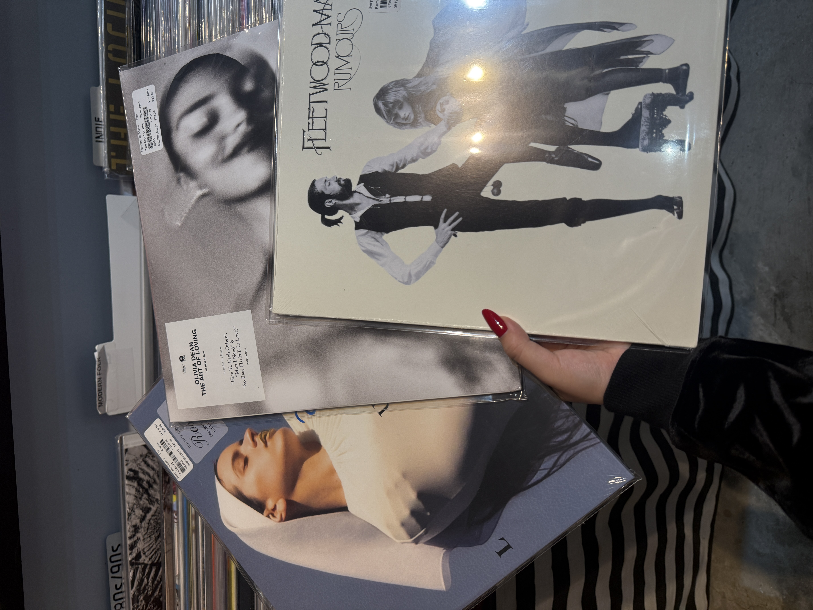
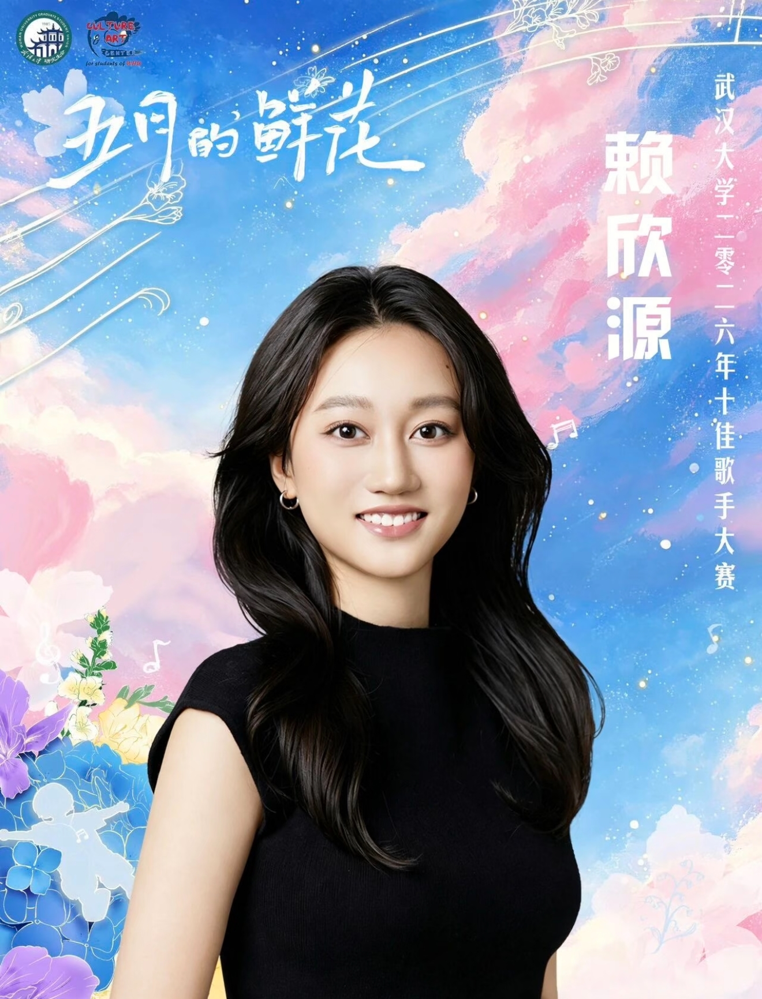
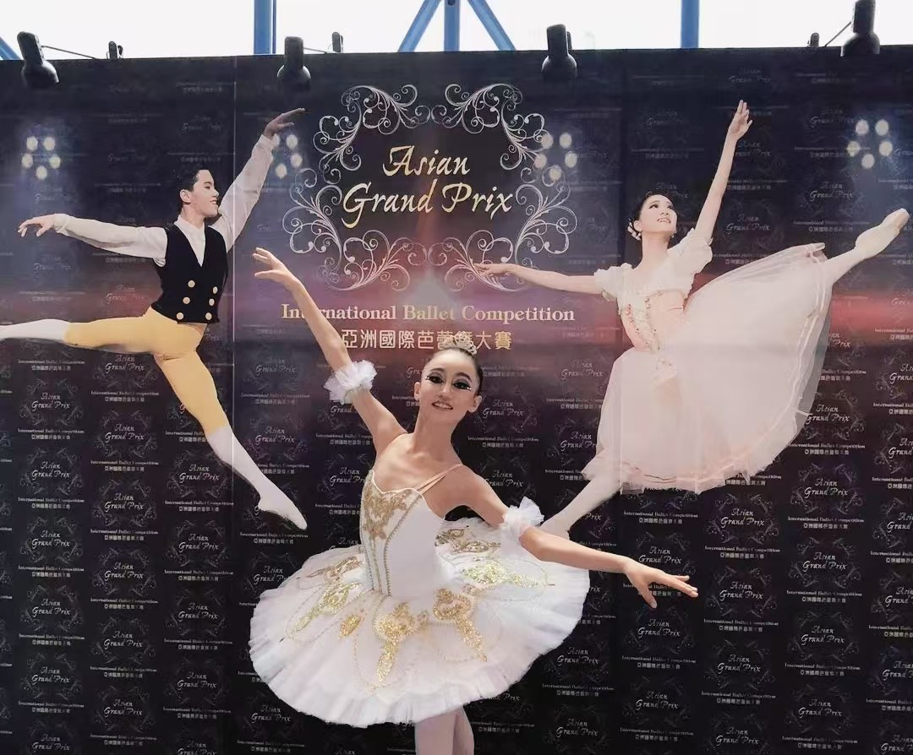

01 / LISTEN
收集黑胶唱片
把喜欢的旋律留在唱片里，也把每一次聆听变成日常的小仪式。
音乐、舞蹈与舞台。
在喜欢的事里，听见生活的节拍。

MUSIC · DANCE · STAGE

把喜欢的旋律留在唱片里，也把每一次聆听变成日常的小仪式。
走进剧场，感受舞台、音乐与观众共同构成的现场。
点击播放，可拖动进度并全屏观看。

站上舞台，在音乐与灯光中享受表达。

在舞步和音乐之间，继续感受身体表达的力量。